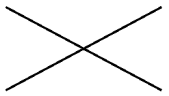
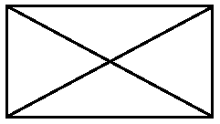
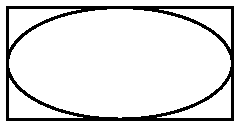
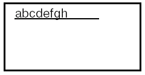
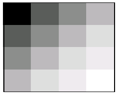
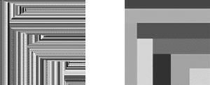

Container
Контейнер описывается классом Container, который является наследником Component, а значит, обладает всеми свойствами графического компонента. Однако основная его задача – группировать другие компоненты. Для этого в нем объявлен целый ряд методов. Для добавления служит метод add, для удаления – remove и removeAll (последний удаляет все компоненты).
Добавляемые компоненты хранятся в упорядоченном списке, поэтому для удаления можно указать либо ссылку на компонент, который и будет удален, либо его порядковый номер в контейнере. Также определены методы для получения компонент, присутствующих в контейнере, – все они довольно очевидны, поэтому перечислим их с краткими пояснениями:
-
getComponent(int n) – возвращает компонент с указанным порядковым номером;
-
getComponents() – возвращает все компоненты в виде массива;
-
getComponentCount() – возвращает количество компонент;
-
getComponentAt(int x, int y) или (Point p) – возвращает компонент, который включает в себя указанную точку;
-
findComponentAt(int x, int y) или (Point p) – возвращает видимый компонент, включающий в себя указанную точку.
Мы уже знаем, что положение компонента (location) задается координатами левого верхнего угла. Важно, что эти значения отсчитываются от левого верхнего угла контейнера, который таким образом является центром системы координат для каждого находящегося в нем компонента. Если важно расположение компонента на экране безотносительно его контейнера, можно воспользоваться методом getLocationOnScreent.
Благодаря наследованию контейнер также имеет свойство size. Этот размер задается независимо от размера и положения вложенных компонент. Таким образом, компоненты могут располагаться частично или полностью за пределами своего контейнера (что это означает, будет рассмотрено ниже, но принципиально это допустимо).
Раз контейнер наследуется от Component, он сам является компонентом, а значит, может быть добавлен в другой, вышестоящий контейнер. В то же время компонент может находиться лишь в одном контейнере. Это означает, что все элементы сложного пользовательского интерфейса объединяются в иерархическое дерево. Такая организация не только облегчает операции над ними, но и задает основные свойства всей работы AWT. Одним из них является принцип отрисовки компонентов.
Алгоритм отрисовки
Начнем с отрисовки отдельного компонента – что определяет его внешний вид?
Для этой задачи предназначен метод paint. Этот метод вызывается каждый раз, когда необходимо отобразить компонент на экране. У него есть один аргумент, тип которого – абстрактный класс Graphics. В этом классе определено множество методов для отрисовки простейших графических элементов – линий, прямоугольников и многоугольников, окружностей и овалов, текста, картинок и т.д.
Наследники класса Component переопределяют метод paint и, пользуясь методами Graphics, задают алгоритм прорисовки своего внешнего вида:
public void paint(Graphics g) {
g.drawLine(0, 0, getWidth(), getHeight());
g.drawLine(0, getHeight(), getWidth(), 0);
} В этом примере компонент будет отображаться двумя линиями, проходящими по его диагоналям:

Рис.
Методы класса Graphics для отрисовки
Рассмотрим обзорно методы класса Graphics, предназначенные для отрисовки.
drawLine(x1, y1, x2, y2)
Этот метод отображает линию толщиной в 1 пиксел, проходящую из точки (x1, y1) в (x2, y2). Именно он использовался в предыдущем примере.
drawRect(int x, int y, int width, int height)
Этот метод отображает прямоугольник, чей левый верхний угол находится в точке (x, y), а ширина и высота равняются width и height соответственно. Правая сторона пройдет по линии x+width, а нижняя – y+height.
Предположим, мы хотим дополнить предыдущий пример рисованием рамки вокруг компонента (периметр). Понятно, что левый верхний угол находится в точке (0, 0). Если ширина компонента равна, например, 100 пикселам, то координата x пробегает значения от 0 до 99. Это означает, что ширина и высота рисуемого прямоугольника должны быть уменьшены на единицу. На самом деле по той же причине в предыдущем примере такое уменьшение на единицу должно присутствовать и в остальных методах:
public void paint(Graphics g) {
g.drawLine(0,0,getWidth()-1, getHeight()-1);
g.drawLine(0,getHeight()-1, getWidth()-1,0);
g.drawRect(0,0,getWidht()-1, getHeight()-1);
} В результате компонент примет следующий вид:

Рис.
fillRect(int x, int y, int width, int height)
Этот метод закрашивает прямоугольник. Левая и правая стороны прямоугольника проходят по линиям x и x+width-1 соответственно, а верхняя и нижняя – y и y+height-1 соответственно. Таким образом, чтобы зарисовать все пикселы компонента, необходимо передать следующие аргументы:
g.fillRect(0, 0, getWidth(), getHeight()); drawOval(int x, int y, int width, int height)
Этот метод рисует овал, вписанный в прямоугольник, задаваемый указанными параметрами. Очевидно, что если прямоугольник имеет равные стороны (т.е. является квадратом), овал становится окружностью.
Снова для того, чтобы вписать овал в границы компонента, необходимо вычесть по единице из ширины и высоты:
g.drawRect(0, 0, getWidht()-1, getHeight()-1);
g.drawOval(0, 0, getWidth()-1, getHeight()-1);
Результат:

Рис.
fillOval(int x, int y, int width, int height)
Этот метод закрашивает указанный овал.
drawArc(int x, int y, int width, int height, int startAngle, int arcAngle)
Этот метод рисует дугу – часть овала, задаваемого первыми четырьмя параметрами. Дуга начинается с угла startAngle и имеет угловой размер arcAngle. Начальный угол соответствует направлению часовой стрелки, указывающей на 3 часа. Угловой размер отсчитывается против часовой стрелки. Таким образом, размер в 90 градусов соответствует дуге в четверть овала (верхнюю правую). Углы "растянуты" в соответствии с размером прямоугольника. В результате, например, угловой размер в 45 градусов всегда задает границу дуги по линии, проходящей из центра прямоугольника в его правый верхний угол.
fillArc(int x, int y, int width, int height, int startAngle, int arcAngle)
Этот метод закрашивает сектор, ограниченный дугой, задаваемой параметрами.
drawString(String text, int x, int y)
Этот метод выводит на экран текст, задаваемый первым параметром. Точка (x, y) задает позицию самого левого символа. Для наглядности приведем пример:
g.drawString("abcdefgh", 15, 15);
g.drawLine(15, 15, 115, 15);Результатом будет:

Рис.
Состояние Graphics
Экземпляр класса Graphics хранит параметры, необходимые для отрисовки. Рассмотрим их по порядку.
Цвет
Очевидно, что для отрисовки линий, овалов, текста и т.д. необходимо использовать тот или иной цвет. По умолчанию он задается свойством foreground компонента. В любой момент его можно изменить с помощью метода setColor.
Рассмотрим пример:
public void paint(Graphics g) {
for (int i=0; i<4; i++) {
for (int j=0; j<4; j++) {
int c = (int)((i+j)/6.*255);
g.setColor(new Color(c, c, c));
g.fillRect(i*getWidth()/4,
j*getHeight()/4, getWidth()/4,
getHeight()/4);
}
}
}
В результате компонент будет иметь следующий вид:

Рис.
Узнать текущее значение цвета для отрисовки можно с помощью метода getColor.
Шрифт
Метод drawString не имеет аргумента, задающего шрифт для вывода текста на экран. Этот параметр также является частью состояния Graphics. Его значение по умолчанию задается соответствующим свойством компонента, однако может быть изменено с помощью метода setFont. Для получения текущего значения служит метод getFont.
Clip (ограничитель)
Хотя методы класса Graphics могут принимать любые значения аргументов, задающих значения координат (в пределах типа int), существует дополнительный ограничитель – clip. Любые изменения вне этого ограничителя на экране появляться не будут. Например, если вызвать метод drawLine(-100, -100, 1000, 1000), то на компоненте отобразится лишь часть линии, которая помещается в его границы.
Размеры ограничителя можно изменять. Метод clipRect(int x, int y, int width, int height) вычисляет пересечение указанного прямоугольника и текущей области clip. Результат станет новым ограничителем. Таким образом, этот метод может только сужать область clip. Метод setClip(int x, int y, int width, int height) устанавливает ограничитель произвольно в форме прямоугольника. Метод getClipBounds возвращает текущее значение в виде объекта Rectangle.
При появлении приложения на экране каждый видимый компонент должен быть отрисован полностью. Поэтому при первом вызове метода paint, как правило, область clip совпадает с границами компонента. Однако при дальнейшей работе это не всегда так.
Рассмотрим следующий пример:
public void paint(Graphics g) {
Color c = new Color(
(int)(Math.random()*255),
(int)(Math.random()*255),
(int)(Math.random()*255));
g.setColor(c);
//g.setClip(null);
g.fillRect(0, 0, getWidth(), getHeight());
}
Как видно из кода, при каждом вызове метода paint генерируется новое значение цвета, после чего этим цветом закрашивается весь компонент. Однако поскольку в Graphics есть ограничитель, закрашена будет только область clip, что позволит ее увидеть.
После запуска программы компонент будет полностью окрашен одним цветом. Если теперь с помощью мыши "взять" окно какого-нибудь другого приложения и медленно "провести" им поверх компонента, то он окрасится примерно таким образом (левая картинка):

Рис.
Если же провести быстро, то получится картинка, подобная правой в примере выше. Хорошо видно, что компонент перерисовывается не полностью, а частями. Ограничитель выставляется в соответствии с той областью, которая оказалась "повреждена" и нуждается в перерисовке. Для сложных компонентов можно ввести логику, которая, используя clip, будет отрисовывать не все элементы, а только некоторые из них, для увеличения производительности.
В примере закомментирована одна строка, в которой передается значение null в метод setClip. Такой вызов снимает все ограничения, поэтому компонента каждый раз будет перекрашиваться полностью, меняя при этом цвет. Однако никаким образом нельзя изменить состояние пикселов вне компонента – ограничитель не может быть шире, чем границы компонента.
Методы repaint и update
Кроме paint в классе Component объявлены еще два метода, отвечающие за прорисовку компонента. Как было рассмотрено, вызов paint инициируется операционной системой, если возникает необходимость перерисовать окно приложения, или часть его. Однако может потребоваться обновить внешний вид, руководствуясь программной логикой. Например, отобразить результат операции вычисления, или работы с сетью. Можно изменить состояние компонента (значение его полей), но операционная система не отследит такое изменение и не инициирует перерисовку.
Для программной инициализации перерисовки компонента служит метод repaint. Конечно, у него нет аргумента типа Graphics, поскольку программист не должен создавать экземпляры этого класса (точнее, его наследников, ведь Graphics – абстрактный класс). Метод repaint можно вызывать без аргументов. В этом случае компонент будет перерисован максимально быстро. Можно указать аргумент типа long – количество миллисекунд. Система инициализирует перерисовку спустя указанное время. Можно указать четыре числа типа int (x, y, width, height), задавая прямоугольную область компонента, которая нуждается в перерисовке. Наконец, можно указать все 5 параметров – и задержку по времени, и область перерисовки.
Если перерисовка инициируется приложением, то система вызывает не метод paint, а метод update. У него уже есть аргумент типа Graphics и по умолчанию он лишь закрашивает всю область компонента фоновым цветом (свойство background), а затем вызывает метод paint. Зачем же было вводить этот дополнительный метод, если можно было сразу вызвать paint? Дело в том, что поскольку перерисовка инициируется приложением, для сложных компонентов становится возможной некоторая оптимизация обновления внешнего вида. Например, если изменение заключается в появлении нового графического элемента, то можно избежать повторной перерисовки остальных элементов – переопределить метод update и реализовать в нем отображение одного только нового элемента. Если же компонент имеет простую структуру, можно оставить метод update без изменений.
Прорисовка контейнера
Теперь, когда известно, как работает прорисовка компонента, перейдем к рассмотрению контейнера. Для его корректного отображения необходимо выполнить два действия. Во-первых, нарисовать сам контейнер, ведь он является наследником компоненты, а значит, имеет метод paint, который может быть переопределен для задания особенного внешнего вида такого контейнера. Во-вторых, инициировать отрисовку всех компонентов, вложенных в него.
Первый шаг ничем не отличается от прорисовки обычного компонента. Как правило, контейнер не содержит никаких особых элементов отображения, ведь основную его площадь занимают вложенные компоненты. Поэтому перейдет ко второму шагу.
Если контейнер не пустой, значит, в нем есть одна или несколько компонент. Они будут отрисованы последовательно в том порядке, в каком были добавлены. Однако недостаточно просто в цикле вызвать метод paint для каждого компонента.
Во-первых, если компонента невидима (свойство visible выставлено в false), то, очевидно, метод paint у нее вызываться не должен.
Во-вторых, центр координат компонента находится в левом верхнем углу его контейнера, а у контейнера – в левом верхнем углу его контейнера. Таким образом, при переходе от отрисовки контейнера к отрисовке лежащего в нем компонента необходимо изменить (перенести) центр системы координат.
Затем необходимо установить clip в соответствии с размером очередного компонента. Необходимо выставить значения по умолчанию для цвета и шрифта, тем более что предыдущий компонент мог изменить их непредсказуемым образом.
В итоге получается более удобным создать новый экземпляр Graphics для каждого компонента. Для этого существует метод create, который порождает копию Graphics, причем ему можно передать аргументы (int x, int y, int width, int height). В результате у нового Graphics будет смещен центр координат в точку (x, y), а clip-область будет получена пересечением существующего ограничителя с прямоугольником (0, 0, width, height) (в новых координатах). Метод create создает копию без изменения этих параметров.
Такие копии бывает удобно порождать и в рамках одного вызова метода paint, если в нем описан слишком сложный алгоритм. После использования такого объекта Graphics его необходимо особым образом освобождать – вызовом метода dispose(). Если необходимо только сместить точку отсчета координат, можно использовать метод translate (int x, int y).
Таким образом, контейнер своим методом paint отрисовывает себя и все вложенные в него компоненты. Если какие-то из них, в свою очередь, являются контейнерами, то процесс иерархически продолжается вглубь. В итоге весь AWT интерфейс, каким бы сложным он ни был, состоит из дерева контейнеров и компонент, отрисовка которых начинается с самого верхнего контейнера и по ветвям развивается вглубь до каждого видимого компонента.
Отдельный интерес представляет этот самый верхний контейнер. Как правило, это окно операционной системы, одновременно являющееся контейнером для Java-компонент. Именно операционная система инициализирует процесс отрисовки, отвечает за сворачивание и разворачивание окна, изменение его размера и так далее. Со стороны Java для работы с окном используется класс Window, который является наследником Container и рассматривается ниже.
|